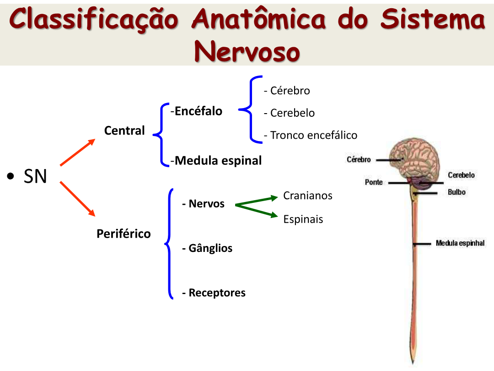
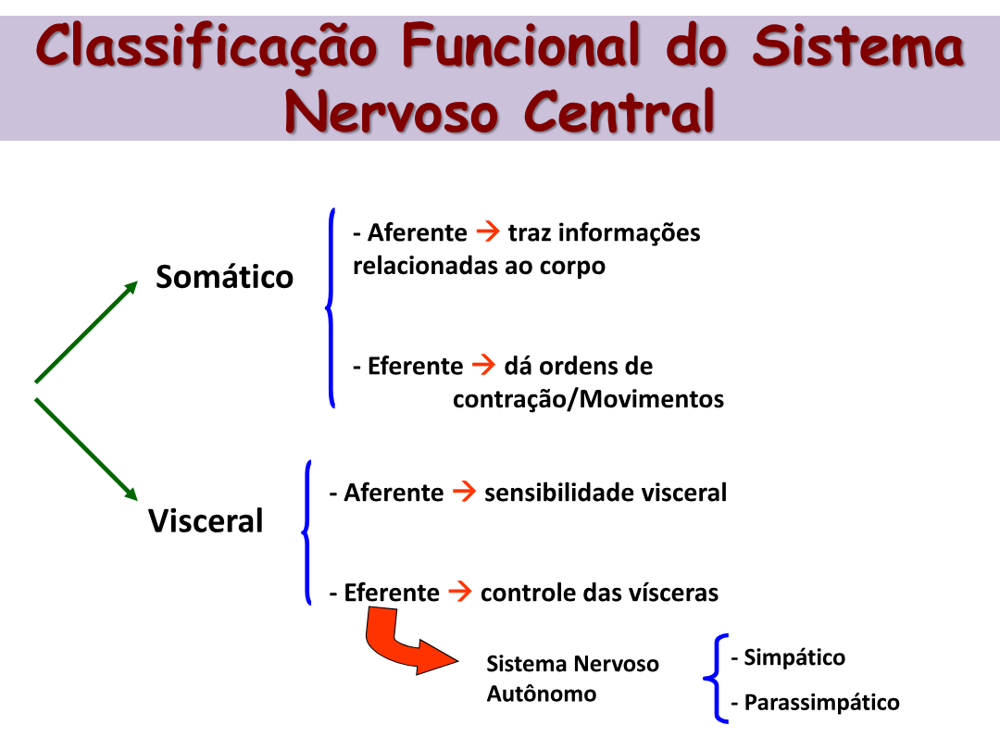
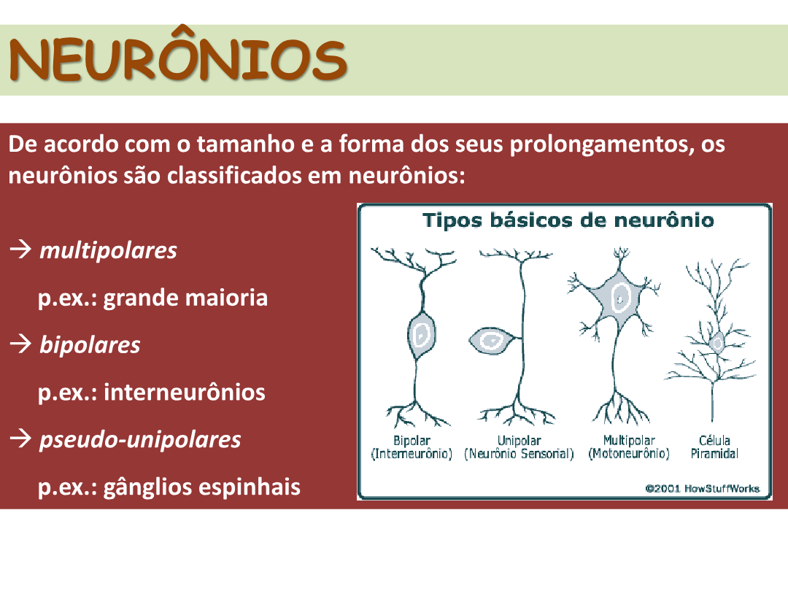
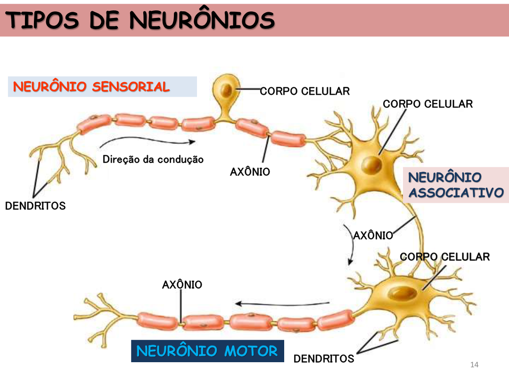
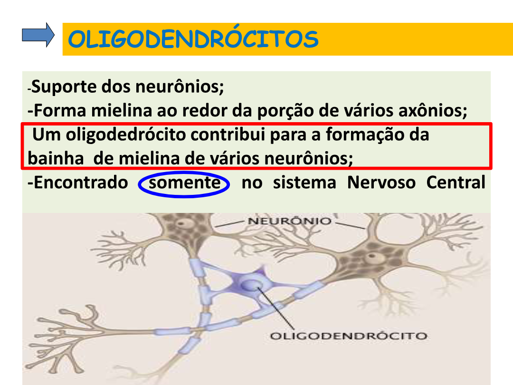
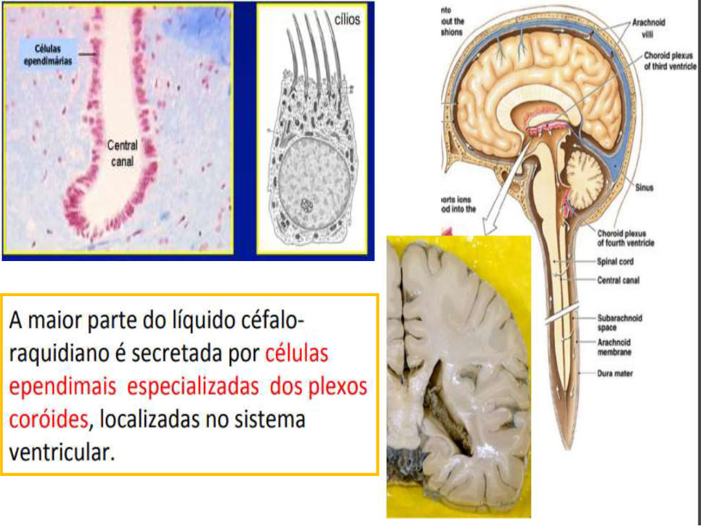
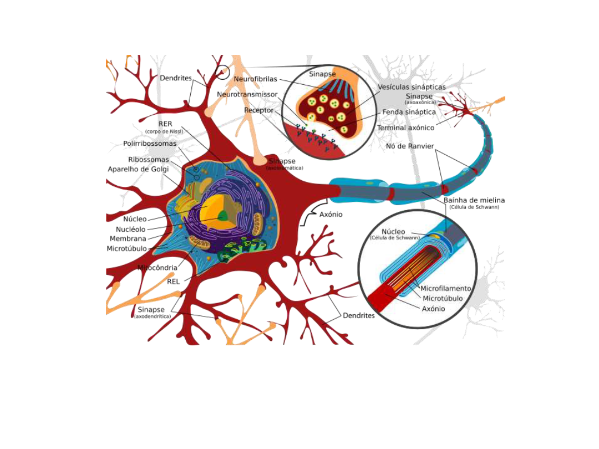

O sistema nervoso é o sistema de comando do corpo — controla todos os outros sistemas, interpreta estímulos e desencadeia respostas. É o que conecta o ser ao mundo.
O sistema nervoso é o conjunto de órgãos do corpo humano que capta mensagens e estímulos do ambiente, os "interpreta" e "arquiva", elaborando respostas na forma de movimentos, sensações ou constatações.
O que ele faz?
Integração do ser com o meio ambiente.
Controle e coordenação das funções de todos os sistemas do organismo.
Interpretação de estímulos e desencadeamento de respostas.
Controle de atos voluntários (conscientes) e involuntários (inconscientes).
Pense no sistema nervoso como a central de operações de uma cidade: ele recebe relatórios de cada bairro (sensores), toma decisões (cérebro) e envia ordens para o trânsito, a iluminação, a água — tudo em milissegundos.
Capítulo 2
Classificação anatômica e funcional
O sistema nervoso se divide, anatomicamente, em Central e Periférico. E funcionalmente, em Somático e Visceral.

Classificação anatômica: SNC (encéfalo + medula) e SNP (nervos, gânglios, receptores).
Classificação anatômica
Divisão
Componentes
Central (SNC)
Encéfalo (cérebro, cerebelo, tronco encefálico) e medula espinal.
Periférico (SNP)
Nervos (cranianos e espinais), gânglios e receptores.
Classificação funcional

Divisão funcional em somático (relação com o corpo) e visceral (controle das vísceras, via SNA).
Divisão
Aferente (sensitivo)
Eferente (motor)
Somático
Traz informações do corpo
Ordens de contração/movimento
Visceral
Sensibilidade visceral
Controle das vísceras (Sistema Nervoso Autônomo: simpático + parassimpático)
Aferente x Eferente:
Aferente (do latim ad-ferre, "trazer para") — leva a informação até o SNC.
Eferente (de ex-ferre, "levar para fora") — leva a ordem do SNC para os efetuadores (músculos, glândulas).
Capítulo 3
Neurônios — estrutura e tipos
O neurônio é a unidade morfofuncional do sistema nervoso. Tem duas propriedades fundamentais: irritabilidade (capacidade de reagir a estímulos) e condutibilidade (transmitir o impulso).
Tecido nervoso = neurônios + células da glia. O neurônio recebe, processa e envia informações.
Partes do neurônio
Estrutura básica: corpo celular, dendritos, axônio, bainha de mielina, célula de Schwann e nódulo de Ranvier.
Estrutura
Função
Corpo celular (pericário)
Contém o núcleo e a maioria das organelas. Integra os sinais recebidos.
Dendritos
Ramificações curtas do corpo celular. Captam estímulos.
Axônio
O maior prolongamento. Conduz o impulso ao terminal. Tem vesículas com neurotransmissores na porção terminal.
Bainha de mielina
Células de Schwann (SNP) ou oligodendrócitos (SNC) que se enrolam no axônio. Funciona como isolante elétrico.
Nódulo de Ranvier
Regiões do axônio não recobertas por mielina. Permitem a condução saltatória.
Tipos morfológicos

Classificação morfológica conforme a forma e número de prolongamentos.
Multipolares — vários dendritos e um axônio. Maioria dos neurônios.
Bipolares — um dendrito e um axônio. Ex: interneurônios da retina.
Pseudo-unipolares — aparentam ter um único prolongamento. Ex: gânglios espinhais.
Tipos funcionais

Neurônio sensorial → associativo → motor — direção típica da condução do estímulo.
Aferentes (sensitivos): levam informações dos receptores ao SNC.
Eferentes (motores): conduzem informações do SNC ao órgão efetuador (músculo ou glândula).
Interneurônios (associativos): conectam aferentes e eferentes dentro do SNC.
Qual a função dos nódulos de Ranvier?
São pequenas regiões do axônio sem bainha de mielina. Permitem a condução saltatória: o impulso nervoso "salta" de nódulo em nódulo, aumentando muito a velocidade de transmissão.
Capítulo 4
Células da Glia (neuroglia)
Por muito tempo achou-se que apenas neurônios "fizessem o trabalho". Hoje sabemos: as células da glia são mais numerosas que os neurônios e sem elas o sistema nervoso simplesmente não funciona.
As células da glia (neuroglia) participam da atividade neural, da nutrição, de processos de defesa e da função de sustentação. Possuem função estrutural e metabólica.
Funções principais
Fornecem suporte físico aos neurônios (o SN tem pouca matriz extracelular).
Suporte metabólico — mantêm a composição do fluido extracelular.
Induzem o crescimento dos neurônios durante desenvolvimento e reparo.
Defesa imunológica e fagocitose de restos celulares.
Astrócitos e oligodendrócitos em ação no SNC — sustentação, mielinização e suporte.
Os 5 tipos principais
Célula
Localização
Função
Astrócitos
SNC
Sustentação, nutrição, formam a barreira hematoencefálica (relação com vasos sanguíneos).
Oligodendrócitos
SNC
Formam a bainha de mielina. Um único oligodendrócito mieliniza vários axônios.
Células de Schwann
SNP
Formam a bainha de mielina no SNP. Cada uma mieliniza apenas um trecho.
Micróglias
SNC
Defesa imunológica — fagocitam restos celulares e patógenos. Tipo especializado de macrófago.
Células ependimárias
Ventrículos do encéfalo, canal central da medula
Epiteliais ciliadas. Produzem e movimentam o líquido cefalorraquidiano (LCR) nos plexos coroides.

Bainha de mielina — quem faz onde?
No SNC — oligodendrócitos (cada um mieliniza até vários axônios). No SNP — células de Schwann (cada uma mieliniza apenas um trecho de um axônio).
A bainha é formada por camadas múltiplas concêntricas de fosfolipídios (em alguns neurônios chegam a ~150 camadas) e funciona como isolante elétrico — permite a condução saltatória.
LCR — Líquido Cefalorraquidiano

O LCR é secretado pelas células ependimárias dos plexos coroides, localizados no sistema ventricular.
Astrócitos × barreira hematoencefálica: os prolongamentos astrocitários se conectam aos vasos sanguíneos e induzem modificações nas células endoteliais, regulando a permeabilidade. É essa "filtragem" que protege o cérebro de toxinas e patógenos no sangue.
Capítulo 5
Impulso Nervoso — potencial de repouso e ação
O sinal que viaja pelo neurônio é, no fundo, uma onda elétrica baseada na troca de íons sódio (Na⁺) e potássio (K⁺) através da membrana.
Potencial de Repouso vs Potencial de Ação
Propagação do impulso — inversão de cargas ao longo da membrana do axônio.
Potencial de repouso: diferença de potencial entre a superfície externa e interna da membrana, mantida pela bomba Na⁺/K⁺. Carga interna ≈ −70 mV.
Potencial de ação: inversão (despolarização) transitória do potencial de repouso, causada pela mudança temporária na permeabilidade da membrana aos íons Na⁺ e K⁺.
As 3 fases elétricas
Eventos elétricos: canais de Na⁺ abrem → despolarização (+30 mV) → canais de Na⁺ fecham → canais de K⁺ abrem → repolarização (volta a −70 mV).
Polarização (repouso): ≈ −70 mV. Fora há mais Na⁺ (positivo); dentro há mais K⁺ + proteínas negativas.
Despolarização: canais de Na⁺ se abrem; Na⁺ entra; a carga interna sobe rapidamente até cerca de +30 mV.
Repolarização: canais de Na⁺ se fecham; canais de K⁺ se abrem; K⁺ sai; a carga volta a ficar negativa.
Bomba Na⁺/K⁺
Para manter o equilíbrio entre disparos, a célula gasta ATP movendo 3 Na⁺ para fora e 2 K⁺ para dentro a cada ciclo. Sem essa bomba, depois de alguns disparos o gradiente se esgotaria e o neurônio pararia de funcionar.
Condução saltatória
Em axônios mielinizados, o potencial "pula" entre os nódulos de Ranvier — muito mais rápido.
Em axônios com bainha de mielina, o impulso não precisa despolarizar toda a membrana ponto a ponto. Ele "salta" de nódulo de Ranvier em nódulo de Ranvier — daí o nome saltatória. O resultado é uma condução muito mais rápida e econômica.
Doenças desmielinizantes, como a esclerose múltipla, atacam a bainha de mielina. Sem ela, a condução fica lenta, errática ou bloqueia — o que explica os sintomas neurológicos típicos.
Por que o potencial de repouso é negativo do lado de dentro?
Porque a bomba Na⁺/K⁺ exporta 3 Na⁺ e importa apenas 2 K⁺ por ciclo (saldo: 1 carga positiva sai por ciclo), e porque há proteínas e ânions presos dentro da célula. Isso deixa o meio intracelular ≈ 70 mV mais negativo que o extracelular.
Capítulo 6
Sinapses e neurotransmissores
Os neurônios não se tocam. Eles se comunicam através de uma fenda microscópica onde substâncias químicas (neurotransmissores) levam a mensagem de um lado para o outro.

Neurônio completo — organelas no soma, axônio mielinizado e detalhe da sinapse.
Sinapse: região de conexão (sem contato físico direto) entre dois neurônios — ou entre neurônio e outra célula efetora. A transmissão ocorre via neurotransmissores (ou diretamente, no caso da sinapse elétrica).
Tipos de sinapse
Tipo
Como funciona
Onde ocorre
Elétrica
O impulso passa de uma célula para outra diretamente via junções comunicantes. Muito mais rápida.
Músculo liso e cardíaco — contração acontece como um todo.
Química
O impulso é transmitido via neurotransmissores liberados na fenda sináptica. Mais lenta, mas modulável.
Maioria das sinapses, especialmente no SNC.
⚡ Quase todas as sinapses do SNC são químicas.
Estrutura da sinapse química
Botões terminais com vesículas de neurotransmissor → fenda sináptica → receptores na membrana pós-sináptica.
Passos da sinapse química
Potencial de ação chega ao terminal axônico.
A entrada de Ca²⁺ dispara a fusão das vesículas com a membrana pré-sináptica.
Neurotransmissores são liberados na fenda sináptica.
Eles se ligam às proteínas receptoras na membrana pós-sináptica.
Isso gera novo potencial (excitatório ou inibitório).
Os neurotransmissores são removidos da fenda — por enzimas (degradação) ou por agentes que impedem a remoção.
Noradrenalina — excitação física e mental, bom humor. Principal NT do SNA simpático.
Glutamato — principal neurotransmissor excitatório do SN.
GABA — principal neurotransmissor inibitório do SN.
Encefalina e endorfina — opiáceos endógenos; modulam a dor e o estresse.
Tipos de sinapses (por quem se conecta)
Interneuronais — neurônio com neurônio.
Neuromusculares — neurônio com fibra muscular (a placa motora).
Neuroglandulares — neurônio com célula glandular.
Placa motora — junção entre o axônio do motoneurônio e a fibra muscular. Liberação de acetilcolina dispara contração.
Qual íon dispara a liberação dos neurotransmissores no terminal pré-sináptico?
O cálcio (Ca²⁺). Quando o potencial de ação chega ao terminal, canais de Ca²⁺ se abrem; o cálcio que entra faz as vesículas se fundirem à membrana pré-sináptica e despejarem os neurotransmissores na fenda.
Pronto para o quiz?
Banco de questões por tema, com dificuldade variável, embaralhamento e modo "focar nos erros".